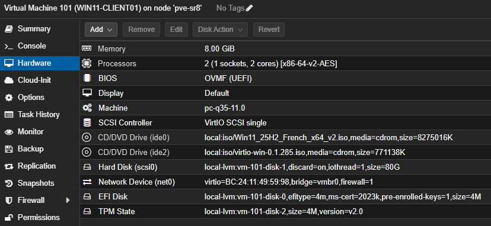
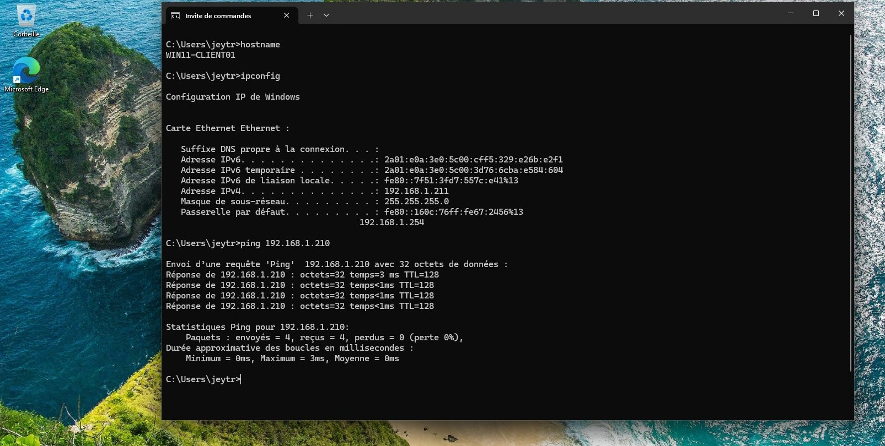

TP03 — Création WIN11-CLIENT01
Théorie : Cours - Hyperviseurs · Architecture
Captures :99-Captures/TP03/· Prérequis : TP02-Creation-SRV-DC01
Objectif
Créer un poste utilisateur destiné à rejoindre le domaine Active Directory.
À la fin du TP :
Proxmox
├── SRV-DC01 (192.168.1.210)
└── WIN11-CLIENT01 (192.168.1.211)
Création de la VM
| Paramètre | Valeur |
|---|---|
| Nom | WIN11-CLIENT01 |
| ID | 101 |
Configuration système
Machine : q35
BIOS : OVMF
TPM : Oui
QEMU Agent : Oui
Ressources
CPU : 2 vCPU
RAM : 8 Go
Disque : 80 Go
Réseau
vmbr0
VirtIO
Capture recommandée

Création VM terminéInstallation Windows 11
Choisir Windows 11 Pro.
Installation du pilote réseau VirtIO
Pendant l'OOBE : Installer un pilote → NetKVM\w11\amd64
Renommage
WIN11-CLIENT01
Configuration IP
| Élément | Valeur |
|---|---|
| IP | 192.168.1.211 |
| Masque | 255.255.255.0 |
| Passerelle | 192.168.1.254 |
| DNS | 192.168.1.210 |
Le DNS pointe déjà vers le futur contrôleur de domaine.
Validation
Tester :
ping 192.168.1.210
Snapshot
Créer le snapshot FreshInstall.

Bureau Windows 11 avec nom du PC, adresse IP et connectivité réseauPrérequis
- [v] TP02-Creation-SRV-DC01 validé
- [v] ISO Windows 11 et VirtIO disponibles sur Proxmox
Validation finale
- [v] VM WIN11-CLIENT01 créée (ID 101)
- [v] Windows 11 installé et renommé
- [v] IP statique
192.168.1.211configurée - [v] Connectivité vers SRV-DC01 vérifiée
- [v] Snapshot
FreshInstallcréé
Progression
| Étape | Lien |
|---|---|
| Prérequis | TP02-Creation-SRV-DC01 |
| Suite recommandée | → TP04-Promotion-DC |
| Branches | Cours - Réseaux |
| Théorie | Cours - Active Directory |
Suivi : Progression